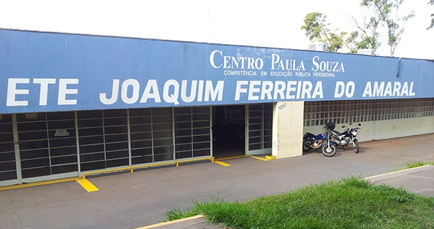
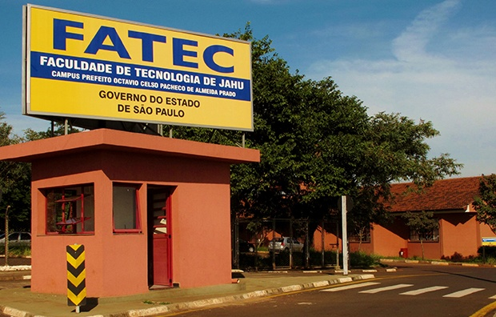

Sou atualmente um assistente de T.I fascinado por novas tecnologias.
Trabalho com Redes, Infraestrutura, Atendimento ao usuário, Manutenção e Apoio técnico.
Pretendo me especializar profissionalmente no ramo de T.I voltado a área de agricultura de precisão e ao agronegócio.


Algumas das principais habilidades profissionais e pessoais que utilizo no diariamente em meu ambiente de trabalho.
Facilidade em trabalhar em equipe.
Desenvolvimento criativo de projetos na empresa que trabalho.
Comprometimento com prazos e qualidade.
Facilidade para aprender novas tecnologias.
Estruturação eficiente dos projetos em que faço parte na empresa.
Busca constante por evolução e aprendizado.